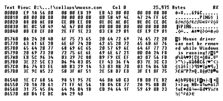
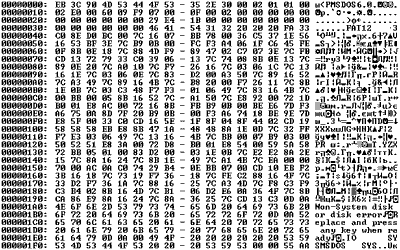
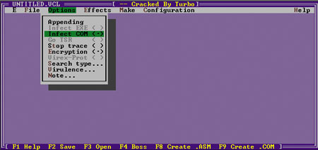

Александр Фролов, Григорий Фролов
alexandre@frolov.pp.ru; http://www.frolov.pp.ru
С момента появления персональных компьютеров начала свой отсчет и история компьютерных вирусов. К сожалению, порой даже опытные системные администраторы (не говоря уж об обычных пользователях) не всегда точно представляют себе, что же такое компьютерные вирусы и как они проникают в компьютеры и сети. Однако, не понимая механизма функционирования и распространения вирусов, невозможно организовать эффективную антивирусную защиту, даже имея в своем распоряжении лучшие антивирусные программы.
Краткий курс истории
Наиболее общее определение компьютерного вируса таково - это самораспространяющийся в информационной среде программный код. Он может внедряться в исполняемые и командные файлы программ, распространяться через загрузочные секторы дискет и жестких дисков, документы офисных приложений, через электронную почту, Web-сайты, по другим электронным каналам.
Проникнув в компьютерную систему, вирус может ограничиться безобидными визуальными или звуковыми эффектами, но может и вызвать потерю или искажение данных, утечку личной и конфиденциальной информации. В худшем случае компьютерная система, пораженная вирусом, окажется под полным контролем злоумышленника.
Сегодня компьютерам доверяют решение многих критических задач. Поэтому выход из строя компьютерных систем может иметь весьма тяжелые последствия, вплоть до человеческих жертв (представьте себе, например, вирус в компьютерных системах аэродромных служб…).
На сегодняшний день известны десятки тысяч различных вирусов. Несмотря на такое изобилие, число типов вирусов, отличающихся друг от друга механизмом распространения и принципом действия, весьма ограниченно. Есть и комбинированные вирусы, которые можно отнести одновременно к нескольким типам. Мы расскажем о различных типах вирусов, выстроив их примерно по хронологии их появления.
Типы вирусов
Файловые вирусы
Внедряясь в тело файлов программ .COM и .EXE, файловые вирусы изменяют их таким образом, что при запуске управление передается не зараженной программе, а вирусу. Вирус может записать свой код в конец, начало или середину файла (рис. 1).
|  |
| Рис. 1. Вирус в файле MOUSE.COM.
|
Получив управление, вирус может заразить другие программы, внедриться в оперативную память компьютера и т. д. Далее вирус передает управление зараженной программе, и та исполняется обычным образом.
Помимо .COM и .EXE файловые вирусы могут заражать программные файлы других типов - оверлеи MS-DOS (.OVL, .OVI, .OVR и другие), драйверы .SYS, библиотеки .DLL, а также любые файлы с программным кодом. Известны файловые вирусы для различных ОС - MS-DOS, Microsoft Windows, Linux, IBM OS/2 и т. д.
Загрузочные вирусы
Загрузочные вирусы получают управление на этапе инициализации компьютера, еще до начала загрузки ОС. При заражении дискеты или жесткого диска загрузочный вирус заменяет загрузочную запись BR или главную загрузочную запись MBR (рис. 2). Исходные записи BR или MBR при этом обычно не пропадают (хотя бывает и иначе): вирус копирует их в один из свободных секторов диска.
|  |
| Рис. 2. Вирус в загрузочной записи.
|
При начальной загрузке компьютера BIOS считывает загрузочную запись с диска или дискеты, в результате чего вирус получает управление еще до загрузки ОС. Затем он копирует себя в конец оперативной памяти и перехватывает несколько функций BIOS. В конце процедуры заражения вирус загружает в память компьютера настоящий загрузочный сектор и передает ему управление. Далее все происходит, как обычно, но вирус уже находится в памяти и может контролировать работу всех программ и драйверов.
Комбинированные вирусы
Очень часто встречаются комбинированные вирусы, объединяющие свойства файловых и загрузочных. В качестве примера можно привести широко распространенный когда-то файлово-загрузочный вирус OneHalf. Проникая в компьютер с ОС MS-DOS, этот вирус заражает главную загрузочную запись. Во время загрузки вирус постепенно шифрует секторы жесткого диска, начиная с самых последних секторов.
Вирус OneHalf использует различные механизмы маскировки. Он представляет собой стелс-вирус и при распространении применяет полиморфные алгоритмы.
Вирусы-спутники
Как известно, в MS-DOS и в Microsoft Windows различных версий существует три типа файлов, которые пользователь может запустить на выполнение. Это командные или пакетные файлы .BAT, а также исполняемые файлы .COM и .EXE.
Когда вирус-спутник заражает файл .EXE или .BAT, он создает в этом же каталоге еще один файл с таким же именем, но с расширением .COM. Вирус записывает себя в этот COM-файл, который запускается до EXE-файла. При запуске программы первым получит управление вирус-спутник, который затем может запустить ту же программу, но уже под своим контролем.
Вирусы в пакетных файлах
Существует несколько вирусов, способных заражать пакетные файлы .BAT. Они записывают свой двоичный код в тело пакетного файла после оператора комментария REM.
При запуске такой пакетный файл копирует вирусный код в обычный исполняемый файл. Затем файл с вирусной программой запускается и удаляется. Получив управление, исполняемый файл вируса выполняет вредоносные действия и заражает другие пакетные файлы.
Шифрующиеся и полиморфные вирусы
Некоторые вирусы шифруют собственный код, чтобы затруднить их обнаружение. Каждый раз, заражая новую программу, вирус использует для шифрования новый ключ. В результате два экземпляра такого вируса могут значительно отличаться друг от друга, даже иметь разную длину.
Для шифрования применяются не только разные ключи, но и разные процедуры шифрования. Два экземпляра такого вируса не имеют ни одной совпадающей последовательности кода. Вирусы, способные полностью изменять свой код, получили название полиморфных.
Стелс-вирусы
Стелс-вирусы пытаются скрыть свое присутствие в компьютере. Они имеют резидентный модуль, постоянно находящийся в оперативной памяти компьютера. Этот модуль перехватывает обращения к дисковой подсистеме компьютера. Если ОС или другая программа считывают файл зараженной программы, то вирус подставляет настоящий, незараженный, файл программы. Для этого резидентный модуль может временно удалять вирус из зараженного файла. После окончания работы с файлом он заражается снова.
Загрузочные стелс-вирусы действуют по такой же схеме. Когда какая-либо программа считывает данные из загрузочного сектора, вместо зараженного подставляется настоящий загрузочный сектор.
Макрокомандные вирусы
Файлы документов Microsoft Office могут содержать в себе небольшие программы для обработки этих документов, составленные на языке Visual Basic for Applications. Это относится и к базам данных Access, а также к файлам презентаций Power Point. Такие программы создаются с использованием макрокоманд, поэтому вирусы, живущие в офисных документах, называются макрокомандными.
Макрокомандные вирусы распространяются вместе с файлами документов. Чтобы заразить компьютер таким вирусом, достаточно просто открыть файл документа в соответствующем приложении.
Макрокомандные вирусы очень распространены, чему в немалой степени способствует популярность Microsoft Office. Они могут изменять зараженные документы, оставаясь незамеченными долгое время.
Вредоносные программы других типов
Кроме вирусов принято выделять еще, по крайней мере, три вида вредоносных программ. Это троянские программы, логические бомбы и программы-черви. Четкого разделения между ними не существует: троянские программы могут содержать вирусы, в вирусы могут быть встроены логические бомбы, и т. д.
Троянские программы
По основному назначению троянские программы совершенно безобидны или даже полезны. Но когда пользователь запишет программу в свой компьютер и запустит ее, она может незаметно выполнять вредоносные функции.
Чаще всего троянские программы используются для первоначального распространения вирусов, для получения удаленного доступа к компьютеру через Интернет, кражи данных или их уничтожения.
Логические бомбы
Логической бомбой называется программа или ее отдельные модули, которые при определенных условиях выполняют вредоносные действия. Логическая бомба может, например, сработать по достижении определенной даты или тогда, когда в базе данных появится или исчезнет запись, и т. д. Такая бомба может быть встроена в вирусы, троянские программы и даже в обычные программы.
Программы-черви
Программы-черви нацелены на выполнение определенной функции, например, на проникновение в систему и модификацию данных. Можно, скажем, создать программу-червь, подсматривающую пароль для доступа к банковской системе и изменяющую базу данных.
Широко известная программа-червь была написана студентом Корнельского университета Робертом Моррисом. Червь Морриса был запущен в Интернет 2 ноября 1988 г. и за 5 часов смог проникнуть более чем на 6000 компьютеров.
Некоторые вирусы-черви (например, Code Red) существуют не внутри файлов, а в виде процессов в памяти зараженного компьютера. Это исключает их обнаружение антивирусами, сканирующими файлы и оставляющими без внимания оперативную память компьютера.
Вирусы в системах документооборота
Документы, хранящиеся в базах данных таких систем документооборота, как Lotus Notes и Microsoft Exchange, тоже могут содержать вирусы, точнее, вредоносные макрокоманды. Они могут активизироваться при выполнении каких-либо действий над документом (например, когда пользователь щелкает кнопку мышью).
Поскольку такие вирусы расположены не в файлах, а в записях баз данных, для защиты от них требуются специализированные антивирусные программы.
Сложно ли создать компьютерный вирус?
Чтобы создать вирус, вовсе не надо быть гением. Пожалуй, создание "с нуля" шифрующегося полиморфного вируса и в самом деле доступно не каждому, однако подавляющее большинство вирусов сегодня пишут посредственные программисты, по всей видимости, не способные найти себе более достойное занятие. Современные антивирусные программы без особого труда расправляются с их "шедеврами".
Более того, можно создавать вирусы, не вникая в детали их внутреннего устройства и даже без программирования. Существуют десятки специальных программ, представляющих собой не что иное, как лаборатории компьютерных вирусов. Снабженные визуальным пользовательским интерфейсом (рис. 3), такие программы позволяют злоумышленнику задать все атрибуты создаваемого вируса - его тип, способ распространения и маскировки, вредоносное воздействие. Далее программа автоматически генерирует зараженный файл, готовый к распространению.
|  |
| Рис. 3. Генератор вирусов Virus Creation Laboratory.
|
В результате каждый день появляется значительное количество новых вирусов, часть из которых может представлять серьезную опасность. Более того, даже простейшие вирусы, написанные дилетантами или созданные автоматическими генераторами вирусов, могут вызвать потерю данных и доставить много других неприятностей.
Основные каналы распространения
Чтобы разработать эффективную систему антивирусной защиты компьютеров и корпоративных сетей, необходимо четко представлять себе, откуда грозит опасность. Вирусы находят самые разные каналы распространения, причем к старым способам постоянно добавляются новые.
Классические способы
Как мы уже говорили, файловые вирусы распространяются вместе с файлами программ в результате обмена дискетами и программами, загрузки программ из сетевых каталогов, с Web- или ftp-серверов.
Загрузочные вирусы попадают на компьютер, когда пользователь забывает зараженную дискету в дисководе, а затем перезагружает ОС. Загрузочный вирус также может быть занесен на компьютер вирусами других типов.
Макрокомандные вирусы распространяются аналогичным образом: в результате обмена зараженными файлами офисных документов, такими, как файлы Microsoft Word, Excel, Access.
Если зараженный компьютер подключен к локальной сети, вирус легко может оказаться на дисках файл-сервера, а оттуда через каталоги, доступные для записи, попасть на все остальные компьютеры сети. Так начинается вирусная эпидемия.
Системный администратор должен помнить, что вирус имеет в сети такие же права, что и пользователь, на компьютер которого этот вирус пробрался. Поэтому он может попасть во все сетевые каталоги, доступные пользователю. Если же вирус завелся на рабочей станции администратора сети, последствия могут быть очень тяжелыми…
По почте
Вместе с вложенным файлом злоумышленник может прислать по электронной почте исполняемый модуль вирусной или троянской программы, вредоносный программный сценарий Visual Basic Script, зараженную или троянскую программу сохранения экрана монитора, словом - любой опасный программный код. Разумеется, электронная почта служит и каналом распространения макрокомандных вирусов, так как вместе с сообщениями часто отправляются офисные документы.
Для маскировки распространители вирусов часто пользуются тем фактом, что по умолчанию диалоговая оболочка Microsoft Windows не отображает расширения зарегистрированных файлов. В результате файл с именем, например, FreeCreditCard.txt.exe, будет показан пользователю как FreeCreditCard.txt. Если пользователь попытается открыть такой файл, будет запущена вредоносная программа. Более того, из-за различных ошибок, присутствующих в ПО почтовых клиентов, файл вложения может запуститься автоматически.
В качестве примера вредоносной программы, вызвавшей недавно целую эпидемию и распространяющейся по почте, можно привести вирус-червь W32/Klez. Чтобы проникнуть на компьютер, он использовал ошибку в браузере Microsoft Internet Explorer версии 5.01 или 5.5 (без пакета обновлений SP2). Этот вирус подставляет в поле сообщения From другую запись, найденную на компьютере-жертве. Далее он пытается деактивировать антивирусные программы, запущенные на компьютере. Этот вирус способен распространяться по локальной сети через сетевые каталоги общего доступа, записывать себя в архивы типа RAR. Вирус-червь W32/Klez рассылает по Интернету документы, хранящиеся на дисках компьютера, и потому может вызвать утечку конфиденциальной информации.
Сообщения электронной почты часто приходят в виде документов HTML, которые могут включать ссылки на элементы управления ActiveX, апплеты Java и другие активные компоненты. Из-за ошибок в почтовых клиентах злоумышленники могут воспользоваться такими активными компонентами для внедрения вирусов и троянских программ на компьютеры пользователей.
При получении сообщения в формате HTML почтовый клиент показывает его содержимое в своем окне. Если сообщение содержит вредоносные активные компоненты, они сразу же запускаются и делают свое черное дело. Чаще всего таким способом распространяются троянские программы и черви.
Троянские Web-сайты
Даже во время простого серфинга сайтов Интернета пользователи могут "подцепить" вирус или троянскую программу. Ошибки в браузерах зачастую приводят к тому, что активные компоненты троянских Web-сайтов (элементы управления ActiveX или апплеты Java) внедряют на компьютеры вредоносные программы.
Здесь используется тот же самый механизм, что и при получении сообщений электронной почты в формате HTML. Но заражение происходит незаметно: активные компоненты Web-страниц могут внешне никак себя не проявлять.
Можно получить приглашение посетить троянский сайт в обычном электронном письме.
Новые и экзотические вирусы
По мере развития компьютерных технологий совершенствуются и компьютерные вирусы, приспосабливаясь к новым для себя сферам обитания. Так, новый вирус W32/Perrun, сообщение о котором есть на сайте компании Network Associates (http://www.nai.com), способен распространяться… через файлы графических изображений формата JPEG. Сразу после запуска W32/Perrun ищет файлы с расширением .JPG и дописывает к ним свой код. Надо сказать, что данный вирус не опасен и требует для своего распространения отдельной программы.
Среди других "достижений" создателей вредоносных программ заслуживает внимания вирус Palm.Phage. Он заражает приложения "наладонных" компьютеров PalmPilot, перезаписывая файлы этих приложений своим кодом.
Появление таких вирусов, как W32/Perrun и Palm.Phage, свидетельствует о том, что в любой момент может родиться компьютерный вирус, троянская программа или червь нового, неизвестного ранее типа, либо известного типа, но нацеленного на новое компьютерное оборудование. Новые вирусы могут использовать неизвестные или не существовавшие ранее каналы распространения, а также новые технологии внедрения в компьютерные системы.
Чтобы исключить угрозу вирусного заражения, системный администратор корпоративной интрасети или администратор антивирусной защиты должен не только разработать и внедрить методики антивирусной защиты, но и постоянно быть в курсе дела, отслеживая новости в мире компьютерных вирусов.